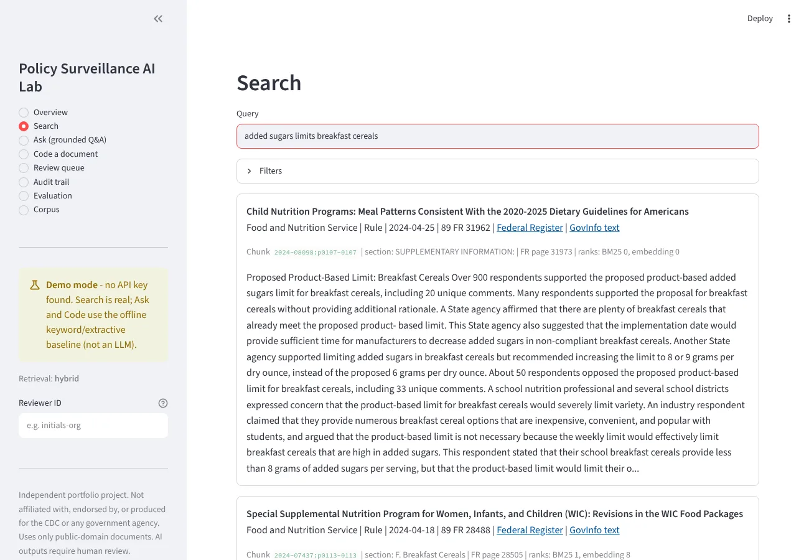
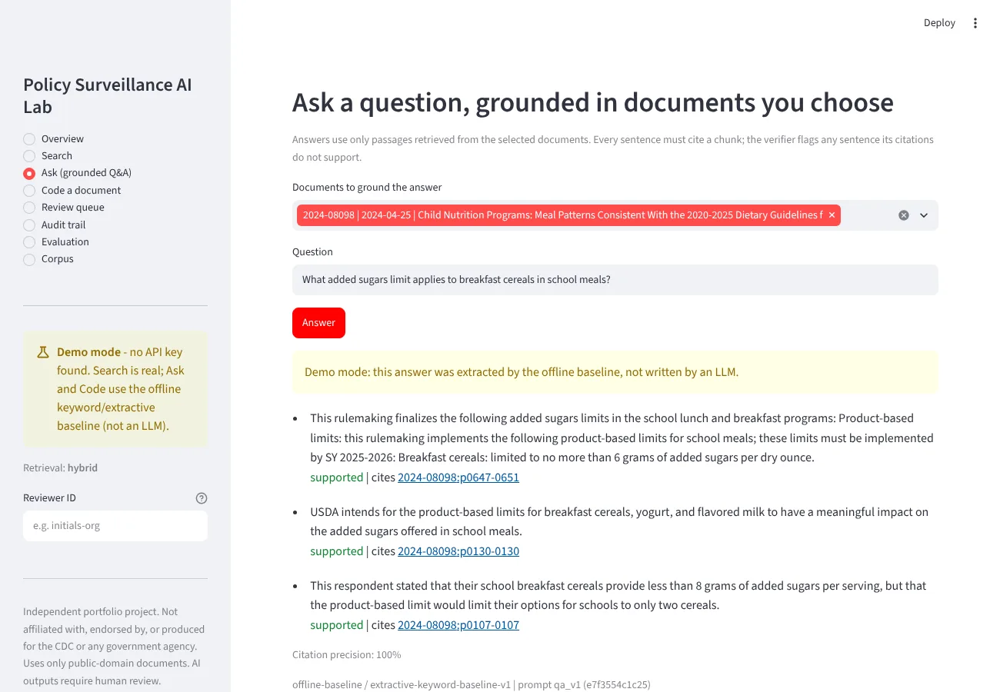
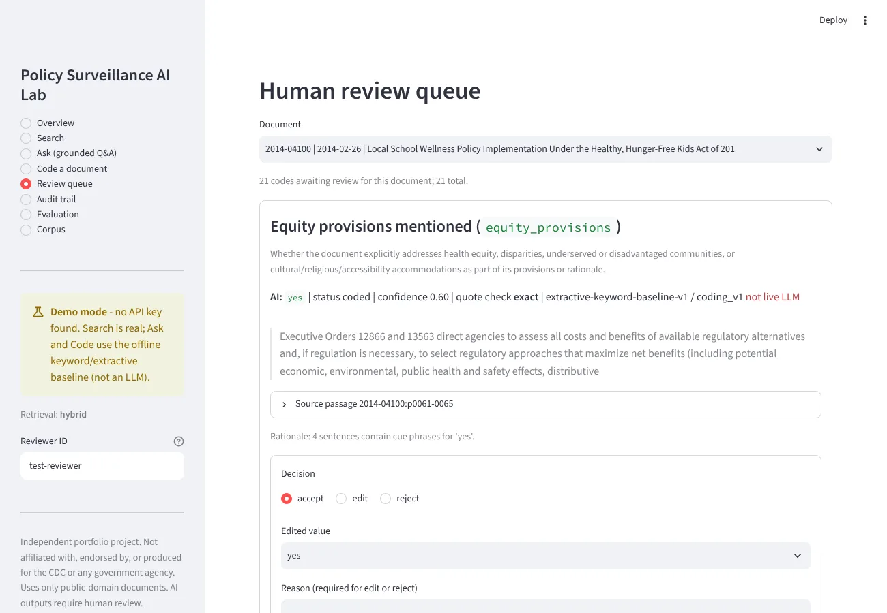
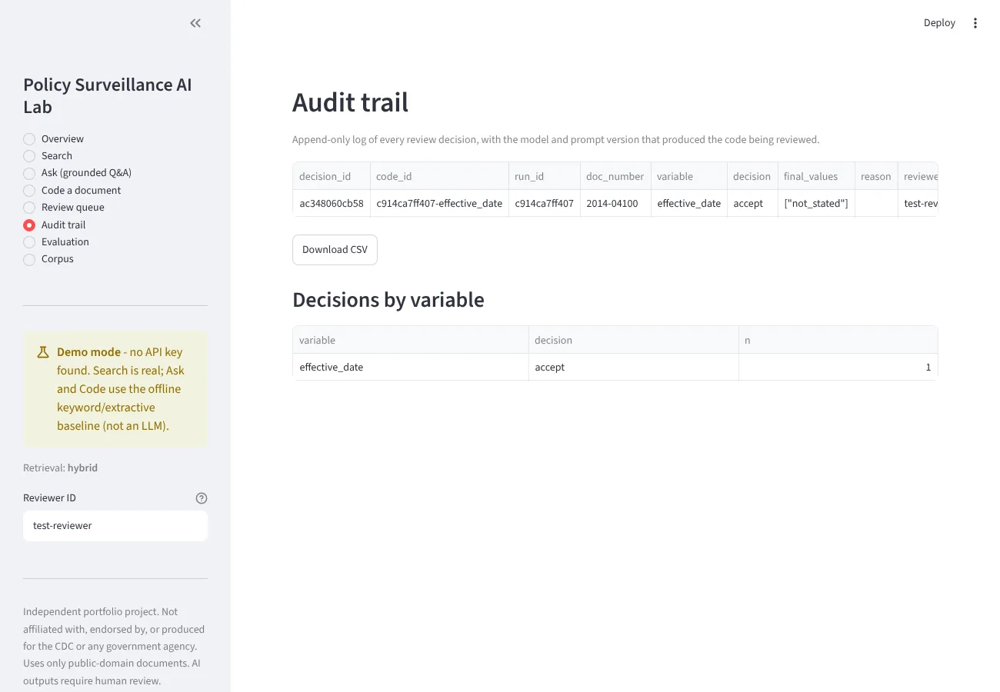

AI that assists policy surveillance, and a way to measure whether you can trust it.
Search {{n_docs}} public-domain Federal Register documents on nutrition, physical activity, and obesity prevention. Ask questions answered only from the documents you select, with a citation on every sentence. Code documents against a structured policy codebook, review every AI code, and measure AI-vs-human agreement.
Disclaimer. {{disclaimer}}
The problem
Manual review is slow
Federal rules on school meals, WIC food packages, or food labeling often run 80 to 250 printed pages. Analysts read them end to end to answer a few structured questions.
Coding is inconsistent
Two trained coders reading the same rule can disagree on its setting, mechanism, or legal force. Without a codebook and agreement metrics, nobody knows how much.
AI without evidence is a risk
A fluent answer with no traceable source cannot be used in public health practice. Every claim needs a citation a reviewer can check in seconds.
How it works
The AI proposes; a human decides. Every proposal carries its evidence, and every decision is logged.
Grounded answers
The model sees only retrieved passages from documents you pick. Each sentence must cite a chunk ID; a verifier checks word overlap and that every number appears in the cited text.
Structured coding
{{n_vars}} codebook variables (domain, population, setting, mechanism, legal force, stage, effective date, nutrients, equity, evaluation, public comment). Each code includes a verbatim quote, a chunk ID, and a confidence score.
Human in the loop
Reviewers accept, edit, or reject each code with a reason. The audit trail records reviewer, time spent, model, and prompt version.
Swappable models
Claude runs behind a provider interface. The public app runs in a clearly labeled demo mode with an offline baseline, which is also what CI tests against. Live mode needs an API key and a password.
Screenshots
Captured from the app in demo mode (offline baseline, no API key).




Evaluation
{{eval_notice}}Agreement by codebook variable
Full tables, retrieval curves, and what each number means: eval/results.md and the evaluation protocol. Generated {{generated}}.
Corpus
{{n_docs}} documents, {{n_chunks}} citable chunks. Metadata from the Federal Register API; full text from GPO GovInfo. Federal government works are public domain (17 U.S.C. 105). Every document is listed with its access date in data/corpus_manifest.csv.
| Topic | Docs |
|---|
| Agency | Docs |
|---|
Governance templates
Written as practical templates that a health agency could adapt.
Responsible use
Intended and out-of-scope uses, the human review requirement, limitations.
Model card
Models, prompts, versions, and known failure modes.
Data governance
Sources, licensing, access, retention, and what is never collected.
Evaluation protocol
How to build the gold standard, run the evaluation, and read the results.